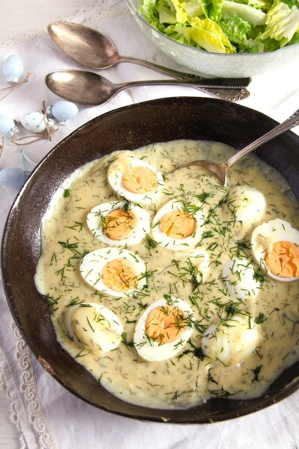

Dad's German Sour Eggs

Photo credit: from this recipe blog post with an alternative method for this dish
Recipe Description
My Dad made this dish for us often growing up, and it was a staple meal from his own childhood. It is a classic East German comfort food which involves making a mustard gravy, poaching eggs in the gravy, and assembling over a plate of boiled potatoes.
Ingredients
- Flour
- Butter
- Water
- Mustard
- Fresh Dill
- Sour Cream
- Sugar
- Horse Radish
- Salt
- Eggs
- Potatoes
Steps
-
Cube potatoes in large chunks and bring to boil in well salted water. Test for doneness by piercing potato chunk with a fork. Drain water and allow for potatoes to release steam while remaining in pot away from heat.
-
Gravy can be prepared while the potatoes are boiling. Slowly combine flour and butter to make roux. This can be done in a large saucepan on low to medium heat. Slowly combine water to achieve desired quantity and thickness for the gravy base.
-
Majority of gravy flavor will come from mustard and sour cream. Use generous amount and stir until well mixed in the gravy. Season to balance taste with desired amounts of sugar, salt, horseradish, and fresh chopped dill.
-
Once gravy flavor is acheived allow to reach gentle boil/simmer. Crack desired quantity of eggs into the saucepan careful to not disturb proximity of previously placed eggs. Do not stir and let the eggs poach in the gravy. The pan can be covered while waiting for the eggs to finish poaching.
-
Spoon the completed mustard gravy with eggs over boiled potatoes and enjoy the hearty goodness.